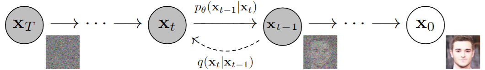
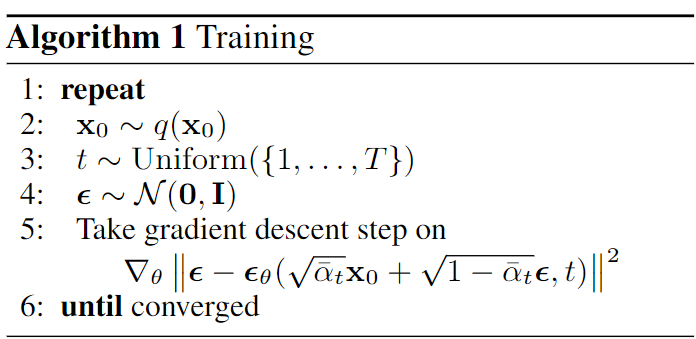

直观理解

借鉴苏剑林拆楼建楼的比喻，扩散模型包含“拆楼”和“建楼”两个相反的过程，拆楼是为了更好的建楼，核心的思想是从一堆材料出发去直接一步建成一个楼是比较困难的，但是如果我们有已经建好的楼，一步步将其拆除，将拆除过程中的每一对中间过程$(x_t,x_{t-1})$记下来，那么建楼的过程就被分解成了在上一步的基础上，添加被拆掉的那一部分，就可以恢复被拆之前的楼的结构，问题就变得简单了。
- 前向过程就是将一个完整的楼$x_0$通过T步拆解，逐步变成原材料$x_T$的过程： $x_0\rightarrow x_1\rightarrow x_2\rightarrow x_3\cdots \rightarrow x_T$，中间的每一步都可以表示为$x_{t-1}\rightarrow x_t: q(x_t|x_{t-1})$
- 反向过程就是从原材料$x_T$开始，一步步建楼，逐步建成完整的楼$x_0$的过程： $x_T\rightarrow \cdots \rightarrow x_3 \rightarrow x_2 \rightarrow x_1 \rightarrow x_0$，中间的每一步都可以表示为$x_t \rightarrow x_{t-1}:p_\theta(x_{t-1}|x_t)$
扩散过程（前向过程）
回到图像上来，DDPM的作者将“拆楼”的过程实现为逐步在一张清晰的图像$x_0$上加高斯噪声$\epsilon_t$使其退化，这个过程也被称为扩散过程（Diffusion Process），在$T$步扩散之后，清晰图像$x_0$最终退化为纯高斯噪声$\epsilon_T\sim\mathcal{N}(0,\mathbf{I})$。退化的每一步可以表示为： $$\begin{equation} x_t = \alpha_t x_{t-1} + \beta_t \epsilon_t,\quad \alpha_t,\beta_t>0\, 并且 \, \alpha_t^2+\beta_t^2=1 \tag{1} \end{equation}$$
这里的$\alpha_t x_{t-1}$可以直观理解为第$t$步拆除之后剩余的楼体的部分，$\beta_t \epsilon_t$可以理解为拆楼得到的原材料。反复执行扩散过程，可以得到： $$ \begin{align} x_t &= \alpha_t x_{t-1} + \beta_t \epsilon_t \\ &= \alpha_t (\alpha_{t-1}x_{t-2}+\beta_{t-1}\epsilon_{t-1}) + \beta_t \epsilon_t \\ &=\alpha_t\alpha_{t-1}x_{t-2}+\alpha_t\beta_{t-1}\epsilon_{t-1} + \beta_t \epsilon_t \\ &=\alpha_t\alpha_{t-1}(\alpha_{t-2}x_{t-3}+\beta_{t-2}\epsilon_{t-2})+\alpha_t\beta_{t-1}\epsilon_{t-1} + \beta_t \epsilon_t \\ &=\alpha_t\alpha_{t-1}\alpha_{t-2}x_{t-3}+\alpha_t\alpha_{t-1}\beta_{t-2}\epsilon_{t-2}+\alpha_t\beta_{t-1}\epsilon_{t-1} + \beta_t \epsilon_t \\ &=\cdots \\ &=\textcolor{green}{(\alpha_t\alpha_{t-1}\cdots\alpha_1)x_0} \\ &\quad+\textcolor{red}{(\alpha_t\alpha_{t-1}\cdots\alpha_2\beta_1)\epsilon_1+(\alpha_t\alpha_{t-1}\cdots\alpha_3\beta_2)\epsilon_2 + \cdots + (\alpha_t\beta_{t-1})\epsilon_{t-1} + \beta_t\epsilon_t} \end{align} \tag{2} $$
可以发现，每一个中间结果$x_t$都可以用最初的清晰图像$x_0$加上一堆独立的高斯噪声表示。红色部分其实是均值为$0$，方差分别为$(\alpha_t\alpha_{t-1}\cdots\alpha_2)^2\beta_1^2$、$(\alpha_t\alpha_{t-1}\cdots\alpha_3)^2\beta_2^2$、$\cdots$、$\alpha_t^2\beta_{t-1}^2$、$\beta_t^2$的独立高斯噪声的和，根据高斯分布的可叠加性，红色部分可以改写为下面的等价形式： $$ \begin{align} &(\alpha_t\alpha_{t-1}\cdots\alpha_2\beta_1)\epsilon_1+(\alpha_t\alpha_{t-1}\cdots\alpha_3\beta_2)\epsilon_2 + \cdots + (\alpha_t\beta_{t-1})\epsilon_{t-1} + \beta_t\epsilon_t \\ =&\small\sqrt{(\alpha_t\alpha_{t-1}\cdots\alpha_2)^2\beta_1^2+(\alpha_t\alpha_{t-1}\cdots\alpha_3)^2\beta_2^2+\cdots+\alpha_t^2\beta_{t-1}^2+\beta_t^2}\cdot\bar{\epsilon}_t,\quad \bar{\epsilon}_t \sim \mathcal{N}(0,\mathbf{I}) \end{align} \tag{3} $$ 下面单独计算根号下的部分，为了计算方便，我们给根号下的部分先加上一个$(\alpha_t\alpha_{t-1}\cdots\alpha_2\alpha_1)^2$，再减去$(\alpha_t\alpha_{t-1}\cdots\alpha_2\alpha_1)^2$ $$ \begin{align} &\quad(\alpha_t\alpha_{t-1}\cdots\alpha_2)^2\beta_1^2+(\alpha_t\alpha_{t-1}\cdots\alpha_3)^2\beta_2^2+\cdots+\alpha_t^2\beta_{t-1}^2+\beta_t^2 \\ &=\small\textcolor{red}{(\alpha_t\alpha_{t-1}\cdots\alpha_2\alpha_1)^2+}(\alpha_t\alpha_{t-1}\cdots\alpha_2)^2\beta_1^2+(\alpha_t\alpha_{t-1}\cdots\alpha_3)^2\beta_2^2+\cdots+\alpha_t^2\beta_{t-1}^2+\beta_t^2 \\ &\quad\textcolor{red}{-(\alpha_t\alpha_{t-1}\cdots\alpha_2\alpha_1)^2} \\ \end{align} \tag{4} $$
前两项先提取公共项：$(\alpha_t\alpha_{t-1}\cdots\alpha_2)^2$，得到： $$ \small(\alpha_t\alpha_{t-1}\cdots\alpha_2)^2\textcolor{blue}{(\alpha_1^2+\beta_1^2)}+(\alpha_t\alpha_{t-1}\cdots\alpha_3)^2\beta_2^2+\cdots+\alpha_t^2\beta_{t-1}^2+\beta_t^2-(\alpha_t\alpha_{t-1}\cdots\alpha_2\alpha_1)^2 \tag{5} $$
因为我们定义假设$\alpha_t^2+\beta_t^2=1$，所以$\alpha_1^2+\beta_1^2=1$，可以得到： $$\begin{equation} \begin{aligned} &\quad(\alpha_t\alpha_{t-1}\cdots\alpha_2)^2+(\alpha_t\alpha_{t-1}\cdots\alpha_3)^2\beta_2^2+\cdots+\alpha_t^2\beta_{t-1}^2+\beta_t^2-(\alpha_t\alpha_{t-1}\cdots\alpha_2\alpha_1)^2 \\ \end{aligned} \tag{6} \end{equation}$$
同样地，再提取前两项的公共项：$(\alpha_t\alpha_{t-1}\cdots\alpha_3)^2$，得到： $$\begin{equation} \begin{aligned} &\quad(\alpha_t\alpha_{t-1}\cdots\alpha_3)^2\textcolor{blue}{(\alpha_2^2+\beta_2^2)}+\cdots+\alpha_t^2\beta_{t-1}^2+\beta_t^2-(\alpha_t\alpha_{t-1}\cdots\alpha_2\alpha_1)^2 \\ &=(\alpha_t\alpha_{t-1}\cdots\alpha_3)^2+\cdots+\alpha_t^2\beta_{t-1}^2+\beta_t^2-(\alpha_t\alpha_{t-1}\cdots\alpha_2\alpha_1)^2 \end{aligned} \tag{7} \end{equation}$$
以此类推，可以得到： $$\begin{equation} \begin{aligned} &\quad(\alpha_t\alpha_{t-1}\cdots\alpha_2)^2\beta_1^2+(\alpha_t\alpha_{t-1}\cdots\alpha_3)^2\beta_2^2+\cdots+\alpha_t^2\beta_{t-1}^2+\beta_t^2 \\ &= \textcolor{blue}{(\alpha_t^2+\beta_t^2)}-(\alpha_t\alpha_{t-1}\cdots\alpha_2\alpha_1)^2 \\ &=1-(\alpha_t\alpha_{t-1}\cdots\alpha_2\alpha_1)^2 \end{aligned} \tag{8} \end{equation}$$
所以: $$\begin{equation} \begin{aligned} x_t &= \alpha_t x_{t-1} + \beta_t \epsilon_t \\ &=\small\textcolor{green}{(\alpha_t\alpha_{t-1}\cdots\alpha_1)x_0}+\textcolor{red}{(\alpha_t\alpha_{t-1}\cdots\alpha_2\beta_1)\epsilon_1+(\alpha_t\alpha_{t-1}\cdots\alpha_3\beta_2)\epsilon_2 + \cdots + (\alpha_t\beta_{t-1})\epsilon_{t-1} + \beta_t\epsilon_t} \\ &=\small\textcolor{green}{(\alpha_t\alpha_{t-1}\cdots\alpha_1)x_0}+\textcolor{red}{\sqrt{(\alpha_t\alpha_{t-1}\cdots\alpha_2)^2\beta_1^2+(\alpha_t\alpha_{t-1}\cdots\alpha_3)^2\beta_2^2+\cdots+\alpha_t^2\beta_{t-1}^2+\beta_t^2}\cdot\bar{\epsilon}_t} \\ &=\textcolor{green}{(\alpha_t\alpha_{t-1}\cdots\alpha_1)x_0} + \textcolor{red}{\sqrt{1-(\alpha_t\alpha_{t-1}\cdots\alpha_2\alpha_1)^2}\cdot\bar{\epsilon}_t} \end{aligned} \tag{9} \end{equation}$$
令：$\bar{\alpha}_t=(\alpha_t\alpha_{t-1}\cdots\alpha_2\alpha_1)^2$，则： $$\begin{equation} \begin{aligned} x_t &= \alpha_t x_{t-1} + \beta_t \epsilon_t \\ &=\textcolor{green}{(\alpha_t\alpha_{t-1}\cdots\alpha_1)x_0} + \textcolor{red}{\sqrt{1-(\alpha_t\alpha_{t-1}\cdots\alpha_2\alpha_1)^2}\cdot\bar{\epsilon}_t}\\ &=\sqrt{\bar{\alpha}_t}x_0+\sqrt{1-\bar{\alpha}_t}\bar{\epsilon}_t \end{aligned} \tag{10} \end{equation}$$
至此，我们就得到了DDPM的前向公式$x_t=\sqrt{\bar{\alpha}_t}x_0+\sqrt{1-\bar{\alpha}_t}\bar{\epsilon}_t$，这个公式定义我们如何从输入的清晰图像$x_0$通过一步加噪就可以得到任意一个中间结果$x_t$，省去了扩散过程中的高斯噪声的采样的次数。 而且，只要设计合理的$\bar{\alpha}_t$，使得在$T\to +\infty$时，$\bar{\alpha}_T\to 0$且$T\to 0$时，$\bar{\alpha}_T\to 1$，就可以保证扩散过程开始于清晰图像，结束于纯高斯噪声$\epsilon_T$。
去噪过程（反向过程）
DDPM的目的不是为了给清晰图像加噪声，而是反过来，从纯高斯噪声出发，逐步生成与$x_0$属于同一分布的图像（长得像$x_0$的图像），即：$\epsilon_T \to x_T \to x_{T-1} \to \cdots \to x_1 \to x_0$。
再看看公式(10)，有了扩散的拆楼公式，我们就可以很容易（一步采样）计算出每一个中间的结果$x_t$，而且可以得到很多的相邻的中间结果的数据对$\{(x_t,x_{t-1})\}_{t=1}^T$。
为了确定每一步的楼是怎么建，既然有了数据，我们很自然可以想到，使用前向过程得到的数据学习一个网络（假设模型是$\mu_\theta$）来学习去噪（建楼）的过程$\mu_\theta(x_t)$：
学习的方式可以使用MSE，即： $$\begin{equation} \|x_{t-1}-\mu_\theta(x_t)\|^2 \tag{11} \end{equation}$$
公式(1)可以写成： $$\begin{equation} x_{t-1}=\frac{1}{\alpha_t}(x_t-\beta_t\epsilon_t) \tag{12} \end{equation}$$
为了使得训练更加稳定，原来预测图像的$\mu_\theta(x_t)$可以设计成预测noise的$\epsilon_\theta(x_t, t)$，即： $$\begin{equation} \mu_\theta(x_t):=\frac{1}{\alpha_t}(x_t-\beta_t\epsilon_\theta(x_t, t)) \tag{13} \end{equation}$$
带入到损失函数(11)中，可以得到： $$\begin{equation} \begin{aligned} &\quad\|x_{t-1}-\frac{1}{\alpha_t}(x_t-\beta_t\epsilon_\theta(x_t, t))\|^2 \\ &=\|\frac{1}{\alpha_t}(x_t-\beta_t\epsilon_t)-\frac{1}{\alpha_t}(x_t-\beta_t\epsilon_\theta(x_t, t))\|^2 \\ &=\frac{\beta_t^2}{\alpha_t^2}\|\epsilon_t-\epsilon_\theta(x_t, t)\|^2 \end{aligned} \tag{14} \end{equation}$$
其中$x_t$可以计算出来： $$\begin{equation} \begin{aligned} x_t &= \alpha_t x_{t-1} + \beta_t \epsilon_t \\ &= \alpha_t(\sqrt{\bar{\alpha}_{t-1}}x_0+\sqrt{1-\bar{\alpha}_{t-1}}\bar{\epsilon}_{t-1}) + \beta_t \epsilon_t \\ &=\sqrt{\bar{\alpha}_t}x_0+\alpha_t\sqrt{1-\bar{\alpha}_{t-1}}\bar{\epsilon}_{t-1} + \beta_t \epsilon_t \end{aligned} \tag{15} \end{equation}$$
这里的$x_t$为什么不直接用公式(10)的形式$\sqrt{\bar{\alpha}_t}x_0+\sqrt{1-\bar{\alpha}_t}\bar{\epsilon}_t$来表示，而是要退回到公式(1)的形式$\alpha_t x_{t-1} + \beta_t \epsilon_t$来表示呢？
因为在公式(14)中，我们已经事先采样了一个$\epsilon_t$，而从公式(9)的定义我们知道$\bar{\epsilon}_t$和$\epsilon_t$不是相互独立的，我们不能在已经采样了$\epsilon_t$的情况下再去独立的采样一个$\bar{\epsilon}_t$，所以只能退回到公式(1)的形式来表示$x_t$。
代入公式(14)的loss函数中，可以得到： $$\begin{equation} \begin{aligned} &\quad\|x_{t-1}-\frac{1}{\alpha_t}(x_t-\beta_t\epsilon_\theta(x_t, t))\|^2 \\ &=\|\frac{1}{\alpha_t}(x_t-\beta_t\epsilon_t)-\frac{1}{\alpha_t}(x_t-\beta_t\epsilon_\theta(x_t, t))\|^2 \\ &=\frac{\beta_t^2}{\alpha_t^2}\|\epsilon_t-\epsilon_\theta(\sqrt{\bar{\alpha}_t}x_0+\alpha_t\sqrt{1-\bar{\alpha}_{t-1}}\bar{\epsilon}_{t-1} + \beta_t \epsilon_t, t)\|^2 \end{aligned} \tag{16} \end{equation}$$
降低方差
理论上通过公式(16)就可以训练DDPM了，但实际上可能存在方差过大的风险，因为公式(16)中有四个需要采样的随机变量：
- 从所有训练样本中采样一个$x_0$
- 从高斯分布中采样$\bar{\epsilon}_{t-1},\epsilon_t$
- 从$1\sim T$中采样一个$t$
要采样的随机变量越多，就越难对损失函数做准确的估计，反过来说就是每次对损失函数进行估计的波动（方差）过大了。
解决思路：利用高斯分布的叠加性，将$\bar{\epsilon}_{t-1},\epsilon_t$合并。
(a) $\alpha_t\sqrt{1-\bar{\alpha}_{t-1}}\bar{\epsilon}_{t-1} + \beta_t \epsilon_t$是$\mathcal{N}(0,\alpha_t^2(1-\bar{\alpha}_{t-1}))$和$\mathcal{N}(0,\beta_t^2)$这两个高斯分布的和，那么叠加之后的高斯分布的均值是0，方差是$\alpha_t^2(1-\bar{\alpha}_{t-1}) + \beta_t^2$，展开计算一下： $$\begin{equation} \begin{aligned} &\quad\alpha_t^2(1-\bar{\alpha}_{t-1}) + \beta_t^2 \\ &=\alpha_t^2+\beta_t^2-\alpha_t^2\bar{\alpha}_{t-1} \\ &=1-\alpha_t^2(\alpha_{t-1}\cdots\alpha_1)^2 \\ &=1-(\alpha_t\alpha_{t-1}\cdots\alpha_1)^2 \\ &=1-\bar{\alpha}_t \end{aligned} \tag{17} \end{equation}$$
即： $$\begin{equation} \alpha_t\sqrt{1-\bar{\alpha}_{t-1}}\bar{\epsilon}_{t-1} + \beta_t \epsilon_t = \sqrt{1-\bar{\alpha}_t}\epsilon \tag{a} \end{equation}$$
(b) 我们可以构造另外一个跟$\bar{\epsilon}_{t-1},\epsilon_t$相关的高斯分布的叠加形式，例如：$\beta_t\bar{\epsilon}_{t-1} - \alpha_t\sqrt{1-\bar{\alpha}_{t-1}}\epsilon_t$，同样是$\mathcal{N}(0,\alpha_t^2(1-\bar{\alpha}_{t-1}))$和$\mathcal{N}(0,\beta_t^2)$这两个高斯分布的和，那么叠加之后的高斯分布的均值同样是0，方差也同样是$\alpha_t^2(1-\bar{\alpha}_{t-1}) + \beta_t^2$。即可以得到： $$\begin{equation} \beta_t\bar{\epsilon}_{t-1} - \alpha_t\sqrt{1-\bar{\alpha}_{t-1}}\epsilon_t = \sqrt{1-\bar{\alpha}_t}\omega\tag{b} \end{equation}$$
综合(a)和(b)，我们可以得到一个方程组： $$\begin{equation} \begin{cases} \alpha_t\sqrt{1-\bar{\alpha}_{t-1}}\bar{\epsilon}_{t-1} + \beta_t \epsilon_t = \sqrt{1-\bar{\alpha}_t}\epsilon \\ \beta_t\bar{\epsilon}_{t-1} - \alpha_t\sqrt{1-\bar{\alpha}_{t-1}}\epsilon_t = \sqrt{1-\bar{\alpha}_t}\omega \tag{18} \end{cases} \end{equation}$$
联立这个方程组，我们可以将$\epsilon_t$用$\epsilon,\omega$来表示，即： $$\begin{equation} \epsilon_t=\frac{\sqrt{1-\bar{\alpha}_t}(\beta_t\epsilon-\alpha_t\sqrt{1-\bar{\alpha}_{t-1}}\omega)}{\beta_t^2+\alpha_t^2(1-\bar{\alpha}_{t-1})}\tag{19} \end{equation}$$
从公式(17)我们可以知道，公式(19)的分母可以化简为：$1-\bar{\alpha}_t$，即： $$\begin{equation} \epsilon_t=\frac{\sqrt{1-\bar{\alpha}_t}(\beta_t\epsilon-\alpha_t\sqrt{1-\bar{\alpha}_{t-1}}\omega)}{1-\bar{\alpha}_t}=\frac{\beta_t\epsilon-\alpha_t\sqrt{1-\bar{\alpha}_{t-1}}\omega}{\sqrt{1-\bar{\alpha}_t}}\tag{20} \end{equation}$$
所以公式(16)可以改写为：
展开平方项： $$\begin{equation} \begin{aligned} &\|\frac{\beta_t}{\sqrt{1-\bar{\alpha}_t}}\epsilon-\frac{\alpha_t\sqrt{1-\bar{\alpha}_{t-1}}}{\sqrt{1-\bar{\alpha}_t}}\omega-\epsilon_\theta(\sqrt{\bar{\alpha}_t}x_0+\sqrt{1-\bar{\alpha}_t}\epsilon, t)\|^2 \\ =&\left(\frac{\beta_t}{\sqrt{1-\bar{\alpha}_t}}\epsilon\right)^2+\left(\frac{\alpha_t\sqrt{1-\bar{\alpha}_{t-1}}}{\sqrt{1-\bar{\alpha}_t}}\omega \right)^2 + \epsilon_\theta^2 \\ &-\frac{2\alpha_t\beta_t\sqrt{1-\bar{\alpha}_{t-1}}}{1-\bar{\alpha}_t}\epsilon\omega -\frac{2\beta_t}{\sqrt{1-\bar{\alpha}_t}}\epsilon\epsilon_\theta + \frac{2\alpha_t\sqrt{1-\bar{\alpha}_{t-1}}}{\sqrt{1-\bar{\alpha}_t}}\omega\epsilon_\theta \end{aligned} \tag{22} \end{equation}$$
由于期望的性质，对于两个相互独立的随机变量$X,Y$, $$\begin{equation} \begin{aligned} &\mathbb{E}[X+Y]=\mathbb{E}[X]+\mathbb{E}[Y] \\ &\mathbb{E}[XY]=\mathbb{E}[X]\mathbb{E}[Y] \end{aligned} \tag{23} \end{equation}$$
并且如果$X\sim \mathcal{N}(0,I)$，则有$\mathbb{E}[X]=0,\mathbb{E}[X^2]=1$。那么公式(21)就可以化简： $$\begin{equation} \begin{aligned} &\mathbb{E}_{x_0,t,\epsilon,\omega\sim \mathcal{N}(0,\mathbf{I})}\left[\|\frac{\beta_t}{\sqrt{1-\bar{\alpha}_t}}\epsilon-\frac{\alpha_t\sqrt{1-\bar{\alpha}_{t-1}}}{\sqrt{1-\bar{\alpha}_t}}\omega-\epsilon_\theta(\sqrt{\bar{\alpha}_t}x_0+\sqrt{1-\bar{\alpha}_t}\epsilon, t)\|^2 \right]\\ =&\small\frac{\beta_t^2}{\alpha_t^2}\mathbb{E}_{x_0,t,\epsilon,\omega\sim \mathcal{N}(0,\mathbf{I})}\left[\left(\frac{\beta_t}{\sqrt{1-\bar{\alpha}_t}}\epsilon\right)^2\right] + \textcolor{green}{\frac{\beta_t^2}{\alpha_t^2}\mathbb{E}_{x_0,t,\epsilon,\omega\sim \mathcal{N}(0,\mathbf{I})}\left[\left(\frac{\alpha_t\sqrt{1-\bar{\alpha}_{t-1}}}{\sqrt{1-\bar{\alpha}_t}}\omega \right)^2\right] }\\ +&\frac{\beta_t^2}{\alpha_t^2}\mathbb{E}_{x_0,t,\epsilon,\omega\sim \mathcal{N}(0,\mathbf{I})}[\epsilon_\theta^2] - \textcolor{red}{\frac{\beta_t^2}{\alpha_t^2}\mathbb{E}_{x_0,t,\epsilon,\omega\sim \mathcal{N}(0,\mathbf{I})}\left[\frac{2\alpha_t\beta_t\sqrt{1-\bar{\alpha}_{t-1}}}{1-\bar{\alpha}_t}\epsilon\omega\right]}\\ -&\frac{\beta_t^2}{\alpha_t^2}\mathbb{E}_{x_0,t,\epsilon,\omega\sim \mathcal{N}(0,\mathbf{I})}\left[\frac{2\beta_t}{\sqrt{1-\bar{\alpha}_t}}\epsilon\epsilon_\theta \right] +\textcolor{red}{\frac{\beta_t^2}{\alpha_t^2}\mathbb{E}_{x_0,t,\epsilon,\omega\sim \mathcal{N}(0,\mathbf{I})}\left[\frac{2\alpha_t\sqrt{1-\bar{\alpha}_{t-1}}}{\sqrt{1-\bar{\alpha}_t}}\omega\epsilon_\theta \right]} \end{aligned} \tag{24} \end{equation}$$
先看绿色的项，因为$\omega\sim \mathcal{N}(0,I)$,则有$\mathbb{E}[\omega^2]=1$： $$\begin{equation} \begin{aligned} &\frac{\beta_t^2}{\alpha_t^2}\mathbb{E}_{x_0,t,\epsilon,\omega\sim \mathcal{N}(0,\mathbf{I})}\left[\left(\frac{\alpha_t\sqrt{1-\bar{\alpha}_{t-1}}}{\sqrt{1-\bar{\alpha}_t}}\omega \right)^2\right] \\ =&\frac{\beta_t^2\alpha_t^2(1-\bar{\alpha}_{t-1})}{\alpha_t^2(1-\bar{\alpha}_t)}\mathbb{E}_{\omega\sim \mathcal{N}(0,\mathbf{I})}\left[\omega^2\right]\\ =&\frac{\beta_t^2\alpha_t^2(1-\bar{\alpha}_{t-1})}{\alpha_t^2(1-\bar{\alpha}_t)}=C\quad(常数) \end{aligned} \tag{25} \end{equation}$$
同样地，因为$\omega\sim \mathcal{N}(0,I)$,则有$\mathbb{E}[\omega]=0$，所以红色的两项其实都是$0$。那么，公式(24)就可以简化为： $$\begin{equation} \begin{aligned} &\mathbb{E}_{x_0,t,\epsilon,\omega\sim \mathcal{N}(0,\mathbf{I})}\left[\|\frac{\beta_t}{\sqrt{1-\bar{\alpha}_t}}\epsilon-\frac{\alpha_t\sqrt{1-\bar{\alpha}_{t-1}}}{\sqrt{1-\bar{\alpha}_t}}\omega-\epsilon_\theta(\sqrt{\bar{\alpha}_t}x_0+\sqrt{1-\bar{\alpha}_t}\epsilon, t)\|^2 \right]\\ =&\small\frac{\beta_t^2}{\alpha_t^2}\mathbb{E}_{\epsilon\sim \mathcal{N}(0,\mathbf{I})}\left[\left(\frac{\beta_t}{\sqrt{1-\bar{\alpha}_t}}\epsilon\right)^2\right] +\frac{\beta_t^2}{\alpha_t^2}\mathbb{E}_{x_0,t,\epsilon\sim \mathcal{N}(0,\mathbf{I})}[\epsilon_\theta^2]- \frac{\beta_t^2}{\alpha_t^2}\mathbb{E}_{x_0,t,\epsilon\sim \mathcal{N}(0,\mathbf{I})}\left[\frac{2\beta_t}{\sqrt{1-\bar{\alpha}_t}}\epsilon\epsilon_\theta \right] + C \\ =&\frac{\beta_t^2}{\alpha_t^2}\mathbb{E}_{x_0,t,\epsilon\sim \mathcal{N}(0,\mathbf{I})}\left[\left(\frac{\beta_t}{\sqrt{1-\bar{\alpha}_t}}\epsilon\right)^2-\frac{2\beta_t}{\sqrt{1-\bar{\alpha}_t}}\epsilon\epsilon_\theta+\epsilon_\theta^2\right] + C \\ =&\frac{\beta_t^2}{\alpha_t^2}\mathbb{E}_{x_0,t,\epsilon\sim \mathcal{N}(0,\mathbf{I})}\left[\|\frac{\beta_t}{\sqrt{1-\bar{\alpha}_t}}\epsilon-\epsilon_\theta\|^2\right] + C \\ =&\frac{\beta_t^2}{\alpha_t^2}\mathbb{E}_{x_0,t,\epsilon\sim \mathcal{N}(0,\mathbf{I})}\left[\|\frac{\beta_t}{\sqrt{1-\bar{\alpha}_t}}\epsilon-\epsilon_\theta(\sqrt{\bar{\alpha}_t}x_0+\sqrt{1-\bar{\alpha}_t}\epsilon, t)\|^2\right] + C \\ =&\frac{1-\bar{\alpha}_t}{\alpha_t^2}\mathbb{E}_{x_0,t,\epsilon\sim \mathcal{N}(0,\mathbf{I})}\left[\|\epsilon-\frac{\sqrt{1-\bar{\alpha}_t}}{\sqrt{1-\alpha_t^2}}\epsilon_\theta(\sqrt{\bar{\alpha}_t}x_0+\sqrt{1-\bar{\alpha}_t}\epsilon, t)\|^2\right] + C \\ \end{aligned} \tag{26} \end{equation}$$
这里可以令：$\bar{\epsilon}_\theta=\frac{\sqrt{1-\bar{\alpha}_t}}{\sqrt{1-\alpha_t^2}}\epsilon_\theta$，在网络拟合的时候直接拟合$\bar{\epsilon}_\theta$，并且期望前面的权重项$\frac{1-\bar{\alpha}_t}{\alpha_t^2}$和后面的常数项$C$，可以得到DDPM最终的loss函数为： $$\begin{equation} \mathcal{L}=\|\epsilon-\bar{\epsilon}_\theta(\sqrt{\bar{\alpha}_t}x_0+\sqrt{1-\bar{\alpha}_t}\epsilon, t)\|^2 \tag{27} \end{equation}$$
当然，只是一个记号而已，$\bar{\epsilon}_\theta$也可以改成$\epsilon_\theta$，即： $$\begin{equation} \mathcal{L}=\|\epsilon-\epsilon_\theta(\sqrt{\bar{\alpha}_t}x_0+\sqrt{1-\bar{\alpha}_t}\epsilon, t)\|^2 \tag{28} \end{equation}$$
训练过程

按照公式(28)，训练的时候每次迭代，先做三个采样：
- 从数据中采样一个$x_0$
- 从$1\sim T$中采样一个$t$
- 从标准正态分布中采样一个$\epsilon$
然后我们要计算$\bar{\alpha}_t=(\alpha_t\alpha_{t-1}\cdots\alpha_2\alpha_1)^2$，DDPM的论文给出的$\alpha_t$为： $$\alpha_t=\sqrt{1-\frac{\beta_T-\beta_1}{T}t} \tag{29}$$ 其中$\beta_1=10^{-4}$，$\beta_T=0.02$，$T=1000$，那么 $$ \bar{\alpha}_t = \prod_{i=1}^t\left(1-\frac{(0.02 - 0.0001)t}{T}\right) = \prod_{i=1}^t\left(1-\frac{0.0199t}{T}\right) \tag{30} $$
实现上维护一个$\alpha_t$累乘的list，即$\bar{\alpha}_t$的list，$[\alpha_1,\alpha_1\alpha_2,\alpha_1\alpha_2\alpha_3,\cdots,\alpha_1\alpha_2\cdots\alpha_t]$ 然后按照公式(28)计算loss，计算梯度，进行梯度下降优化就好
T = 1000
t = torch.arange(1, T + 1) # 生成 1 到 T 的时间步
# 1. 计算每一步的 beta_i = 0.02 * i / T
beta = 0.02 * t / T
# 2. 计算每一步的 alpha_i = 1 - beta_i
alpha = 1 - beta
# 3. 使用 cumprod (Cumulative Product) 直接计算所有的 alpha_bar_t
alpha_bar = torch.cumprod(alpha, dim=0)
# sqrt(alpha_bar)
sqrt_alpha_cum_prod = torch.sqrt(alpha_bar)
sqrt_one_minus_alpha_cum_prod = torch.sqrt(1 - alpha_bar)
# sqrt(1-alpha_bar)
for epoch in epochs:
for x_0 in dataloader:
# 1. 采样一个t
t = torch.randint(0, T, (x0.shape, )).to("cuda")
# 2. 采样一个噪声
epislon = torch.rand_like(x0).to("cuda")
# 3. 根据t和采样的噪声构造：\sqrt{\bar{\alpha}_t}x_0+\sqrt{1-\bar{\alpha}_t}\epsilon
sqrt_alpha_cum_prod = sqrt_alpha_cum_prod.to("cuda")[t].reshape(x0.shape[0])
sqrt_one_minus_alpha_cum_prod = sqrt_one_minus_alpha_cum_prod.to("cuda")[t].reshape(x0.shape[0])
noisy_x = sqrt_alpha_cum_prod * x0 + sqrt_one_minus_alpha_cum_prod * noise
noise_pred= model(noisy_x, t)
loss = nn.MSE()(noise_pred, noise)
loss.backward()